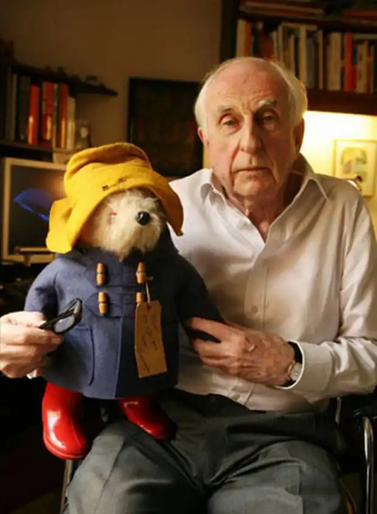

Сер Майкл Бонд (англ. Sir Michael Bond; 13 січня 1926 — 27 червня 2017) — англійський письменник і сценарист, автор широко відомої серії книг про ведмедика Паддінгтона, нагороджений Орденом Британської імперії (1997).
Народився у Ньюбері, Беркшир, невеликому містечку Південно-Східної Англії, 13 січня 1926 року (в цьому ж місті в 1920 році народився інший англійський письменник, Річард Адамс). Навчався в Редінгу, в католицькій школі Presentation College.
Під час Другої світової війни служив в Королівських військово-повітряних силах Великої Британії і в полку від Мидлсекса в Британській Армії. Майкл Бонд почав писати в 1945 році і продав свій перший твір журналу "Думка Лондона" (англ. London Opinion). У 1958 році, написавши до того часу велика кількість п'єс і оповідань і працюючи телеоператором на Бі-бі-сі, Майкл Бонд опублікував своє перше оповідання про Паддінгтона — "Ведмежа Паддінгтон". До 1965 року письменник опублікував уже серію розповідей про невгомонного ведмедика і вирішив залишити роботу на Бі-бі-сі, щоб стати професійним письменником. У 1997 році письменник отримав Орден Британської імперії за внесок у дитячу літературу. 6 липня 2007 року Майкл Бонд став доктором літератури університету в Редінгу. Жив він у Лондоні, недалеко від станції Паддінгтон; одружений, у нього двоє дорослих дітей. Помер в своєму будинку 27 червня 2017 року у віці 91 року після нетривалої хвороби.